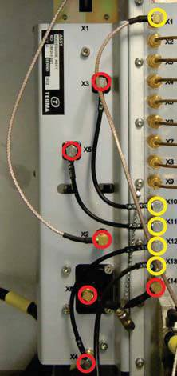
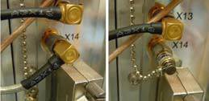
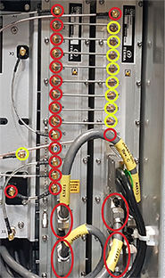
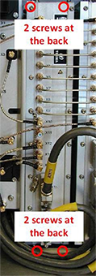
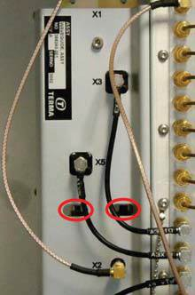

Create a transceiver backup file with the Radar Service Application. For this use the Backup/Restore view.
Stop antenna rotation (if active) with the Radar Service Application.
Switch “Mains Off” with the Radar Service
Application.
Turn off power to the transceiver with the power switch on
the Power Supply Unit
Loosen X6 on the Waveguide Assy and
X14 on the RxTx with Torque wrench, 1 Nm and Extender for torque wrench (see Figure 1).
Figure 1.
Connectors 1

Remove the small cable, that connects X6 with X14 (see Figure 1).
Mount the Termination on X14, which is attached to the RxTx with a chain (see Figure 2).
Figure 2.
Termination

On RxTx, loosen all SMA Connectors (X1 - X14) with Torque wrench, 1 Nm and Extender for torque wrench and two D-Sub Connectors (X15 - X16) with Screwdriver, 3,5 mm x 100 (see red
circles in Figure
3).
Figure 3.
Connectors 2

On the RxTx Controller, loosen and
remove the SMA Connectors X1 and X10 and the two D-Sub Connectors X12 and X14 as these might obstruct
free passage for the RxTx when pulled out (see Figure 3).
On the RxTx Controller, turn the
semi-rigid cables from the SMA Connectors X2 - X9, so
the RxTx has free passage when it is taken out (see
yellow circles in Figure
3).
On the Waveguide Assy, loosen X2
(only slightly), so the cable can be turned away from the RxTx.
With the Screwdriver PH2
x 300 loosen and remove the four screws, which fix the
RxTx to the back (see red circles in Figure 4).
The two lower screws are accessible through the
cable tray at the bottom - the two upper screws are accessible through the
two slots on the front plate (see red circles in Figure 5).
Figure 4.
Screws

Figure 5. Two
Slots

Take out the RxTx module and place it
in an anti-static bag.